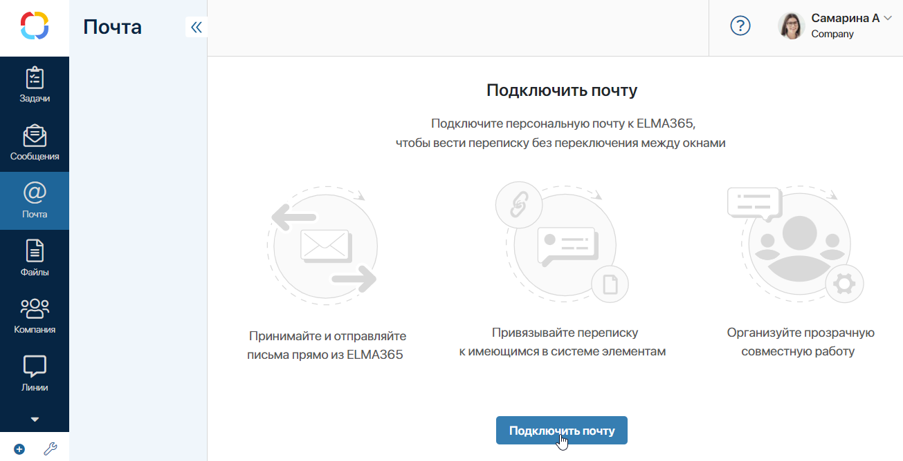
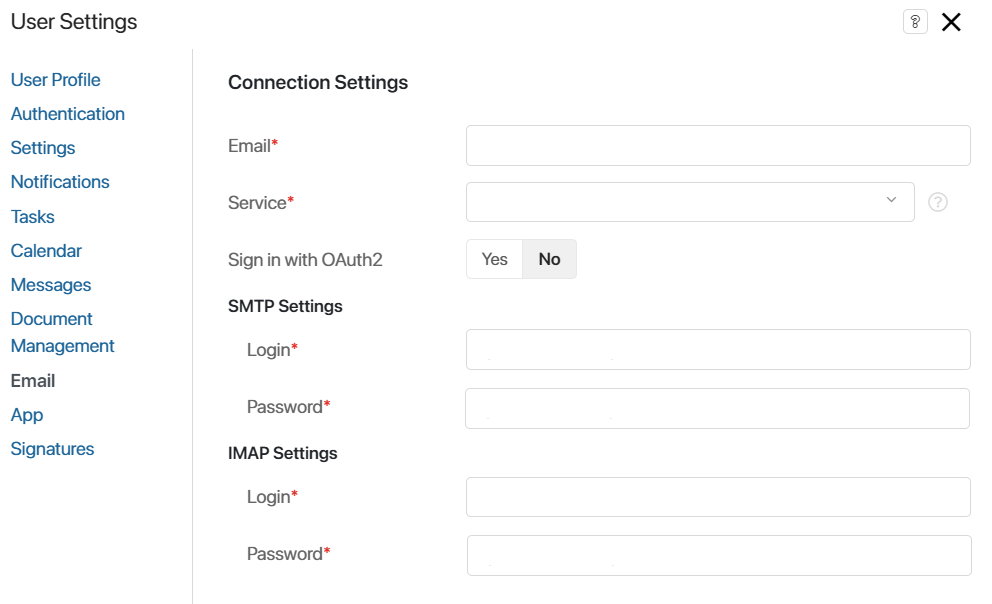
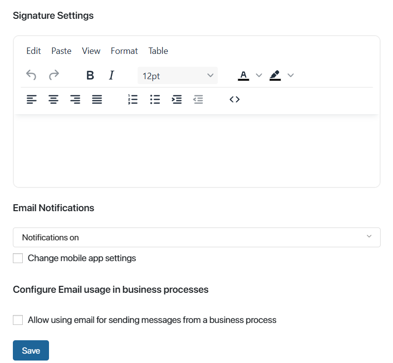
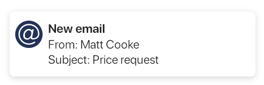

You can connect each BRIX account with one email address. To link an email to your account, follow these steps:
- Open the User profile settings page. You can do it in two ways:
- Open the Email workspace in the left menu and click Connect Email in the center of the page.

- Click your name in the upper right corner of any page in the system and select Settings. In the opened window, click Email in the left menu.
- Fill out the Connection Settings tab.

- Service*. Specify the email service option. You can choose:
- Name of a standard service: Gmail, Yahoo, Outlook, or Office365.
- Name of an email with a custom domain, if the administrator has configured the corporate email server parameters.
- The Other option to set up email connection with a corporate domain using the SMTP and IMAP protocols. In this case, enter the login and password for the connected SMTP and IMAP server in the Login* and Password* fields. They can be requested from the server administrator.
The list of available options depends on the email service settings established by the system administrator;
- Sign in with OAuth2. You can use OAuth2 to connect a mailbox to the Email workspace. You do not need to send the email password to BRIX in this case. It is enough to enter the email address in the Email* and Login* fields, then specify the email service and log in to it. This ensures easy integration and additional security of your account data.
Authentication with OAuth2 is available if the company has configured a module for authentication in the email service. Read more in Custom OAuth2 module for authentication via an external service.
- Login*. If you have selected a standard email service, enter your email login.
- Password*. If you have selected a standard email service, enter your email password.
Note that the settings of some email services require you to additionally enable access to your inbox via the IMAP protocol.
Example of access settings for Gmail
To use Gmail, open the Google Account settings. Click Security in the left-hand side menu, find the How you sign in to Google section, and click 2‑Step Verification. Enable 2‑step verification, then move to the App passwords section. Enter the app name, for example, BRIX, and click Create. Use the generated password in the Connection Settings. Read more about app passwords in Google Account Help in the Sign in with app passwords article. |
- Write a signature in the Signature Settings. It will be displayed at the end of emails you send.

You can always edit the signature in User Settings > Email.
- In the Email Notifications section, you can enable pop-up notifications. To do that, select one of the options from the drop-down list: Notifications on or Do not notify.
To disable BRIX notifications about emails on your mobile phone, check the Change mobile app settings option and select Do not notify.
In these notifications, you will see the author and the subject of the new email. Click the notification to quickly open the page of the email.

- In the Configure Email usage in business processes section, enable the option to allow emails to be sent in the process from the connected email address.
Then you can specify yourself as the sender in the Send personal email activity. Customers will receive emails on your behalf, and the sent messages will be saved in the mail service and displayed in the Email workspace
- If you do not log in with OAuth2, click Save.
If you use OAuth2, click Sign in and select the email service you have specified in the settings from the list. In the opened window, log in to your account using your credentials.
Your email will be synchronized with the email client. Fifty most recent incoming emails will be loaded into the Email workspace so that you can start using it.
Restore connection
If the connection with the IMAP server is disrupted for any reason, a warning next to the email account name will inform you that the settings need to be resaved. The Reconnect button will be available. Click it to open the email settings page. Click Save to restore the connection. You can also make changes to the settings if necessary.
Disconnect an email
You can disconnect an email and change the email provider account. All emails imported into the Email workspace will be deleted. Please note, that if you linked an email with an app item, it will be shown on the item page even after you disconnect the email. This way the context of the conversation is saved, but the emails cannot be opened.
To disconnect an email, open the user profile settings and select Email in the left menu. At the bottom of the window, click Delete Account. The email will be disconnected from the user account, and you will be able to connect another email to it using the instructions above.
Found a typo? Select it and press Ctrl+Enter to send us feedback